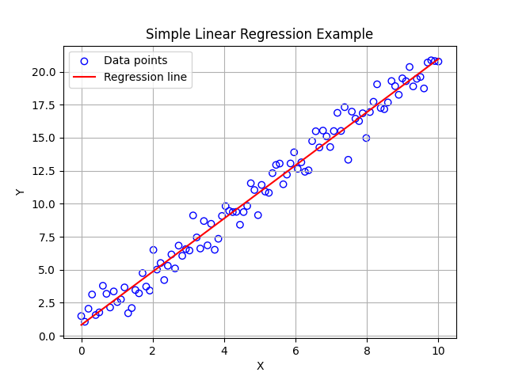

Example 2.1.1.
Figure 2.1.2 shows a simple linear regression on a dataset \(\mathcal{D}\) consisting of \(100\) datapoints generated by adding noise to a linear deterministic function by
\begin{equation*}
Y = f(X) = 1.0 + 2.0 * X + \epsilon,
\end{equation*}
where
\begin{equation*}
\epsilon \sim \mathcal{N}(0,1).
\end{equation*}
Here, we have chosen known values of \(\beta_0 = 1.0\) and \(\beta_1 = 2.0\) to generate the data and want to know how well the simple linear regression produces estimates of these parameters.
The simple linear regression using \(100\) datapoints gave the predicting funtion to be
\begin{equation*}
\hat{Y} = \hat{f}(X) = \hat{\beta}_0 + \hat{\beta}_1\, X,
\end{equation*}
with
\begin{equation*}
\hat{\beta}_0 = 0.83,\quad \hat{\beta}_1 = 2.01.
\end{equation*}
Compare them to the “true” values:
\begin{equation*}
\beta_0 = 1.0,\quad \beta = 2.0.
\end{equation*}
From the data, we appear to get a better estimate for the slope than that of the intercept.
Note that since the dataset, coming from a random sampling process, is a random variable. Therefore, the estimates \(\hat{\beta}_0\) and \(\hat{\beta}_1\) deduced from using \(\mathcal{D}\) are also random variables with their own distributions.
\begin{equation*}
\hat{\beta}_0 \sim \rho(\hat{\beta}_0),\quad \hat{\beta}_1 \sim \rho(\hat{\beta}_1).
\end{equation*}
The estimates we gave above are just estimates of their mean values. And, of course, you can do an entire analysis of the significance level of these estimates. While important in statistics books, they will be largely ignored in the Machine Learning work. We take the view that the estimates of the parameters give us the best we can do.

The figure was generated by the following Python code.
import numpy as np
import matplotlib.pyplot as plt
# Sample dataset
np.random.seed(42) # for reproducibility
X = np.linspace(0, 10, 100)
Y = 1.0+ 2.0 * X + np.random.normal(0, 1, 100) # Y = 2X + 1 + noise
# Calculate means
x_bar = np.mean(X)
y_bar = np.mean(Y)
# Calculate beta_1 (slope)
numerator = np.sum((X - x_bar) * (Y - y_bar))
denominator = np.sum((X - x_bar) ** 2)
beta_1 = numerator / denominator
# Calculate beta_0 (intercept)
beta_0 = y_bar - beta_1 * x_bar
# Print results
print(f"Estimated beta_0 (intercept): {beta_0:.2f}")
print(f"Estimated beta_1 (slope): {beta_1:.2f}")
# Plot the data and regression line
plt.scatter(X, Y, facecolors='none', edgecolors='blue', color='blue', label='Data points')
plt.plot(X, beta_0 + beta_1 * X, color='red', label='Regression line')
plt.xlabel('X')
plt.ylabel('Y')
plt.title('Simple Linear Regression Example')
plt.legend()
plt.grid(True)
plt.show()